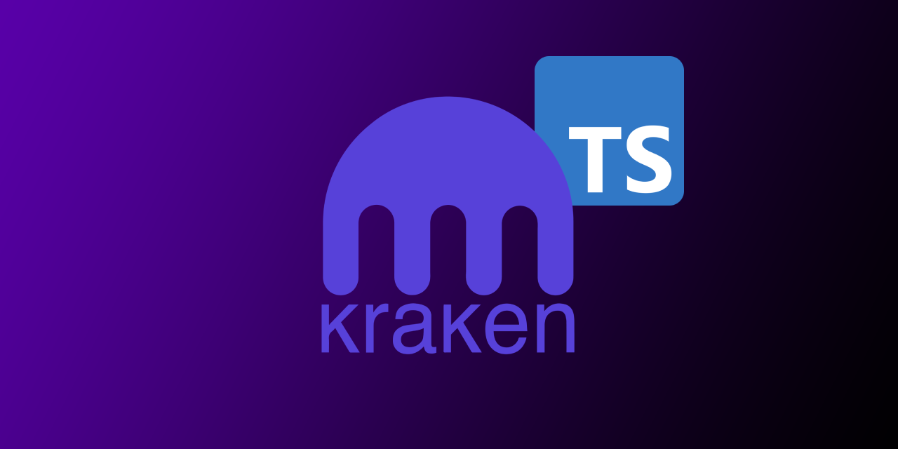

ts-kraken

A strongly typed library to operate with the Kraken Crypto Exchange
Quick-Start • About • Usage • Documentation • Acknowledgments
🚀 Quick-Start
1.- Add the dependency to your js/ts project: npm i ts-kraken
2.- Optionally add KRAKEN_API_KEY and KRAKEN_API_SECRET to your .env (only if you intend to use private methods, i.e. add orders or fetch balances)
3.- Find examples for the methods you need in the documentation
import { PrivateRestHelpers, privateWsSubscription, publicWsSubscription } from 'ts-kraken';
PrivateRestHelpers.getWsAuthToken().then(async token => {
console.log({ token });
const balances$ = await privateWsSubscription({
channel: 'balances',
params: { snapshot: true }
}, token); // Pass token here to save time as the library won't need to fetch one internally!
// Print any updates in the private `balances` channel
balances$.subscribe(({ data }) => {
console.table(data);
});
const fiveMinsBtcUsdCandles$ = publicWsSubscription({
channel: 'ohlc',
params: { symbol: ['BTC/USD'], interval: 5, snapshot: false }
});
// Track 5m candles updates
fiveMinsBtcUsdCandles$.subscribe(({ data: [{ open, high, low, close }] }) => {
console.log({ open, high, low, close });
});
}).catch(error => {
console.log({ error });
});
ℹ️ About this project
ts-kraken is a strongly-typed Typescript Library that will help you operating via code or shell with the Kraken Crypto Exchange
-
Easily operate with Kraken REST and WebSocketV2 APIs
-
Use
ts-krakenhelper methods to build your own trading bots -
Subscribe to custom streams of data combining the RxJS Observables returned by the WebsocketV2 methods
-
Get advantage of modern IDEs Typescript integrations (code autocompletion, suggested imports, etc.)
It also features an interactive node REPL-cli to operate via command-shell or leave a socket open printing all updates to the terminal with a nice jq format 🤓
-
Kraken UI down durig high traffic or maintenance? You can still use the APIs!
-
Use any of the available REST methods directly from your terminal
-
Print nicely formatted data updates coming directly from WebsocketV2 subscriptions
🛠️ Usage
Use the library in your TypeScript/JS project:
(click to extend 👇)
Get IDE code-suggestions for any REST or WS request you need
cd dependant/project/path && npm i ts-kraken

Use the REPL-cli
(click to extend 👇)
You can create a
.envfile that the repl-cli will try to read fromcwd(current working directory):
touch .env
Use the following format:
# .env's file content holding your API key/secret
KRAKEN_API_KEY=yourApiKey
KRAKEN_API_SECRET=yourApiSecret
Launch the REPL directly on your terminal with npx:
Quickest way to test it! 🚀 (will automatically download the library as a global npm package)
npx ts-kraken
Invoke the repl-cli after installing the dependency to your project's node_modules:
npx kraken-repl
Set it up in a standalone directory:
Recommended if planning to use regularly and/or modify core functionality
git clone https://github.com/yeikiu/ts-kraken && cd ts-kraken && npm i
npm run kraken-repl
Open a PR with any addition/change proposal you have!

REPL commands
(click to extend 👇)
The following list includes only a subset sample of all possible commands you could generate for the .get and .post methods:
.exit 👉 Exit the REPL
-----------------------------------------------------------------------------------------------------------------------------------------------------
.find 👉 Finds the most recent closed order satisfying the filter within maxOffset range for given pair.
Usage >> .find <pair>! <orderMatchFilter>! <maxOffset>! <jqFilter>! (all params are mandatory!)
i.e. >> .find ADAETH descr[type]=buy 500 .descr.order
>> .find BTCUSD descr[type]=sell 500 .descr.order
.get 👉 Fetch PUBLIC REST data.
Usage >> .get <PublicEndpoint>! <paramA=valueA¶m_list[]=value1¶m_list[]=value2>? <jqFilter>? <-table>?
i.e. >> .get Time .rfc1123
>> .get AssetPairs . as $base|keys|map($base[.])|map({wsname,tick_size,pair_decimals,ordermin}) -table
>> .get AssetPairs pair=BTC/EUR . as $base|keys[0]|$base[.]|{wsname,tick_size,pair_decimals,ordermin}
-----------------------------------------------------------------------------------------------------------------------------------------------------
.help 👉 Print this help message
-----------------------------------------------------------------------------------------------------------------------------------------------------
.post 👉 Fetch PRIVATE REST data.
Usage >> .post <PrivateEndpoint>! <paramA=valueA¶m_list[]=value1¶m_list[]=value2>? <jqFilter>? <-table>?
i.e. >> .post OpenOrders .open as $open|.open|keys|map($open[.].descr.order)
>> .post OpenOrders .open as $open|.open|keys|map($open[.].descr) -table
>> .post AddOrder ordertype=market&type=sell&volume=0.002&pair=ETHEUR
>> .post CancelAll
-----------------------------------------------------------------------------------------------------------------------------------------------------
.privsub 👉 Subscribe to PRIVATE WS stream.
Usage >> .privsub <subscriptionName>! <paramA=valueA¶m_list[]=value1¶m_list[]=value2>? <jqFilter>? <-table>?
i.e. >> .privsub balances snap_orders=true .data|map({ asset, balance }) -table
>> .privsub executions snap_orders=true .data|map({order_id,side,order_qty,symbol,order_type,limit_price}) -table
.pubsub 👉 Subscribe to PUBLIC WS stream.
Usage >> .pubsub <subscriptionName>! <paramA=valueA¶m_list[]=value1¶m_list[]=value2>? <jqFilter>? <-table>?
i.e. >> .pubsub ticker symbol[]=BTC/EUR .data[0].last
>> .pubsub ticker symbol[]=BTC/EUR&symbol[]=ADA/BTC&symbol[]=USDT/USD .data[0]|{symbol,last} -table
-----------------------------------------------------------------------------------------------------------------------------------------------------
.setkeys 👉 Load API key/secret (non-persistent, use a .env file to reuse persistent keys)
.showkeys 👉 Display current API key/secret in use
-----------------------------------------------------------------------------------------------------------------------------------------------------
.unsub 👉 Closes WebSocket stream for GIVEN subscriptionName.
i.e. >> .unsub ticker
>> .unsub executions
.unsuball 👉 Closes WebSocket stream for ALL subscriptions.
i.e. >> .unsuball
🔖 Documentation
🙏 Acknowledgments
- @trasherdk | Contributor